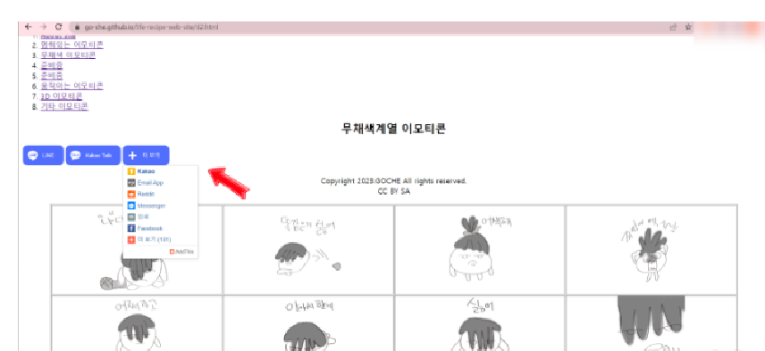
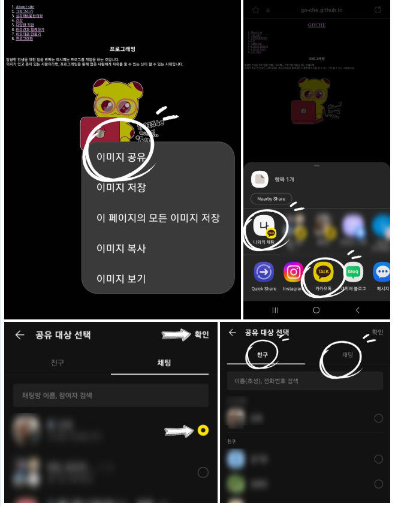

- About site
- 바른생활 말랑냥
- 그레이한 오춘기
- 일하기 싫지만 일해야 하는 최클레이
- 나를 강하게 하는 말
- 오늘도 열심히 살았다 말랑냥
- 3D 다둥쓰의 일상
- Q&A 이모티콘 사용방법
Q&A 이모티콘 사용방법
Q. 다른 사람에게도 이 사이트를 공유하고 싶습니다.
A: 이모티콘 테이블 위에 공유하기 버튼으로 손쉽게 공유할 수 있습니다.

Q. 핸드폰으로 카카오톡에 이모티콘을 보내고 싶습니다.
A:두 가지 방법이 있습니다.
1. 웹사이트에 접속 후 원하는 이미지를 길게 누릅니다.
2. 메뉴에 [이미지를 공유]를 누릅니다.
3-1.자주 사용하는 대화창을 눌러 바로 보낼 수 있습니다
또는
3-2. 아래에 카카오톡 아이콘을 누르면 낼 대상이나 채팅창을 선택하여 보낼 수 있습니다.
Q. 이모티콘에 검은 배경이 있어요. 왜 그런건가요?
A: 다크모드 상태에서 공유하는 경우에 검은 배경이 보일 수 있습니다.

라인, 네이버 블로그 이미지첨부, 인스타그램 쪽지보내기, 슬렉 메시지 보내기, SMS로 보내기, 아이폰 아이메세지 보내기 등도 2번까지 동일한 경로입니다.
*건의사항이나 원하는 이모티콘이 있다면 블로그에 댓글 또는 쪽지 남겨 주세요. 순차적으로 확인 후 최대한 반영하도록 노력하겠습니다. ^^
▶